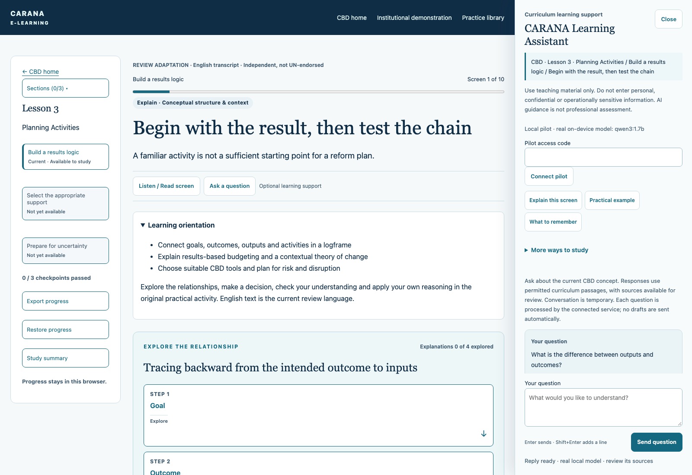
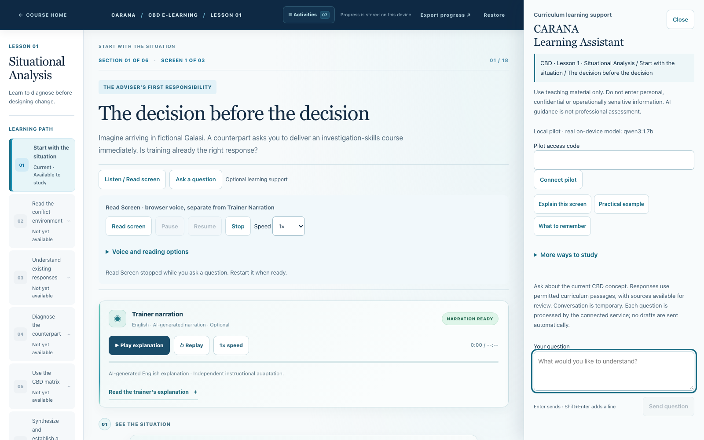
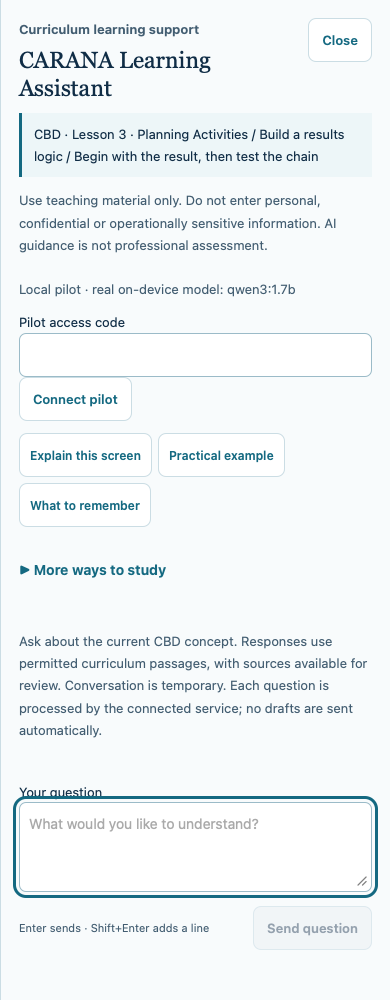

CARANA / CBD E-LEARNING / RUN06
Listen, understand and inquire.
Isolated review candidate. Live AI is controlled local pilot only. Public preview retains an honest unavailable state. Production remains unchanged.
Verified local inference
Screenshot shows a genuine local model response, not the separately labelled simulated interface fixture.

Desktop · lesson1
Desktop · lesson3
Tablet · lesson1
Tablet · lesson3
Mobile · lesson1
Mobile · lesson3
Assistant, local pilot layout


Physical Safari/iOS, audible voice quality, native screen readers and expert content acceptance remain owner checks. Automated evidence does not authorize production release.